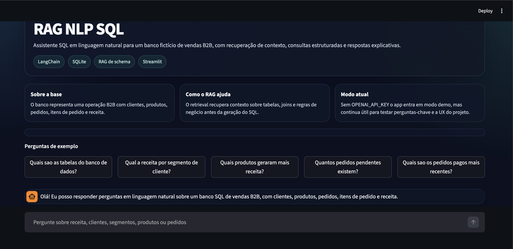
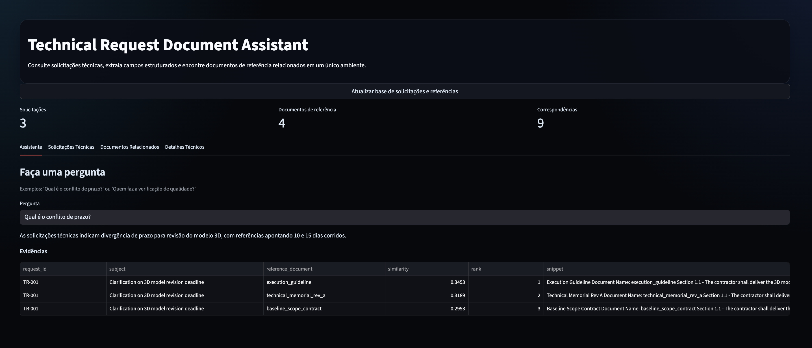
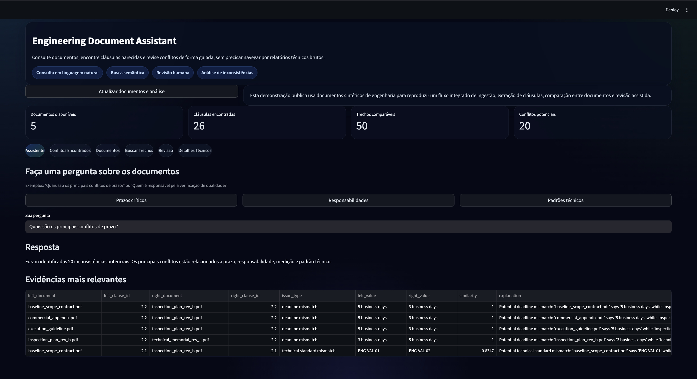
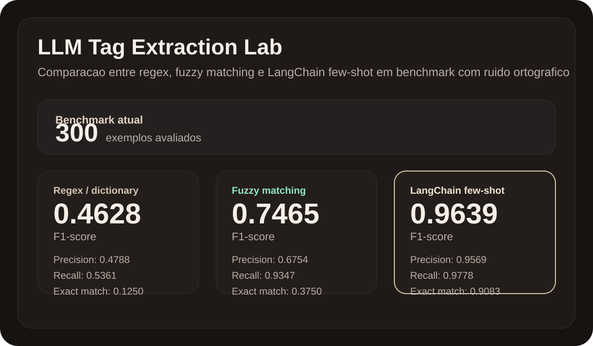
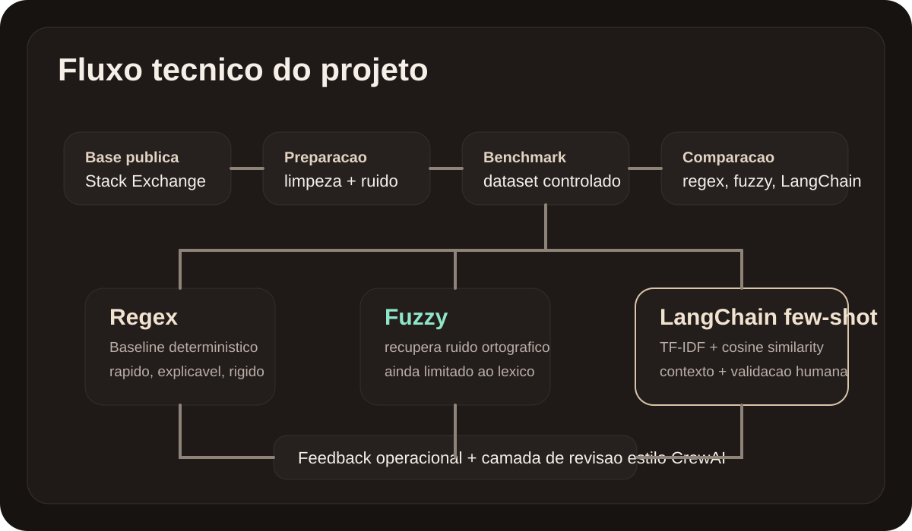
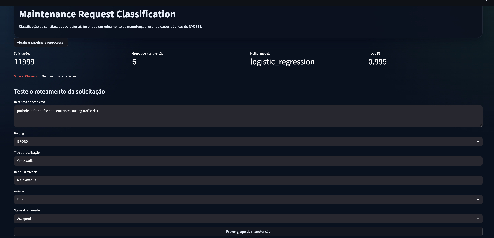
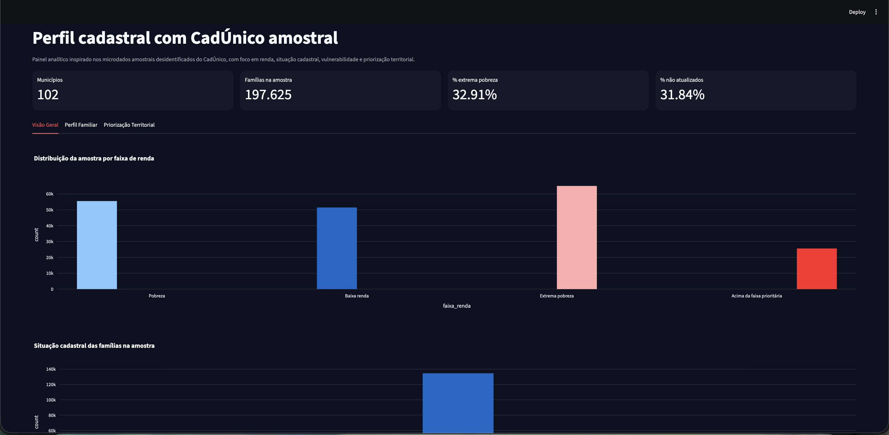
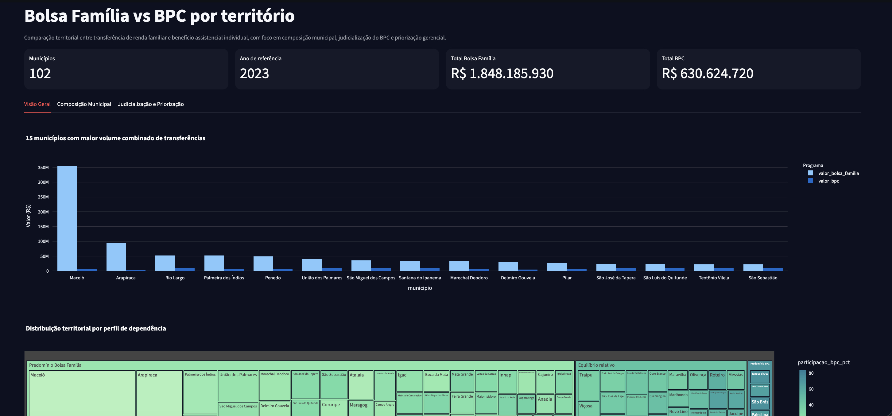
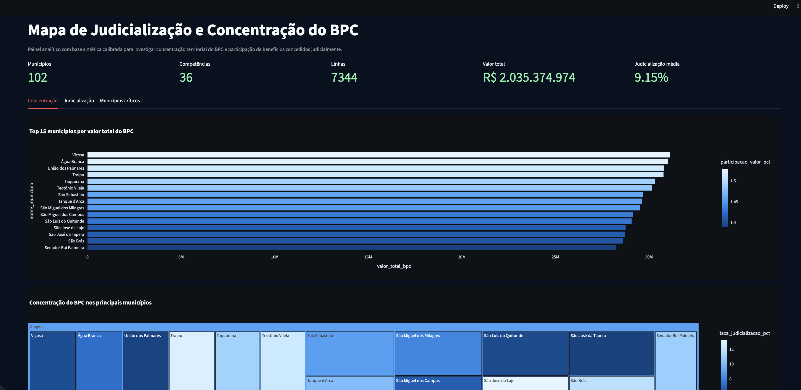
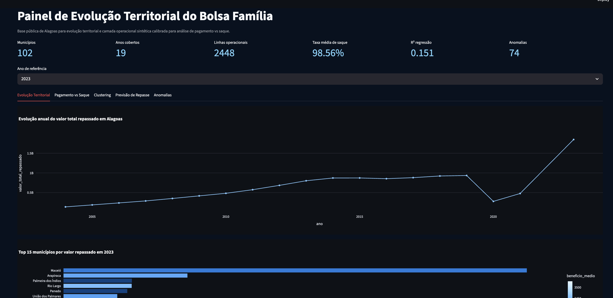

Auditoria de notas fiscais com PySpark, Databricks e Genie
Estruturação de tabelas e consultas em PySpark dentro de
notebooks no Databricks para investigar erros em transações
bancárias que impactavam a análise de notas fiscais. Em
seguida, uso de Genie para acelerar a passagem desse insumo
analítico para um dashboard no Power BI, com atualização
automatizada e apoio à leitura operacional.
- Objetivo: estruturar leitura confiável de inconsistências em grande volume de dados.
- Entrega: estruturação de tabelas analíticas, consultas em PySpark e um dashboard com visões separadas por tipo de inconsistência.
- Stack: PySpark, notebooks Databricks, modelagem de tabelas analíticas, Genie e Power BI.
- Destaque técnico: engenharia analítica em big data, qualidade de dados, automação de atualização e integração entre camada técnica e visualização executiva.
Auditoria de transações bancárias com Random Forest
Projeto de machine learning voltado à priorização de
inconsistências e sinais de risco em dados transacionais para
apoiar auditoria, análise e tomada de decisão.
- Objetivo: classificar sinais de risco e priorizar transações para análise.
- Entrega: classificação supervisionada de transações suspeitas com preparação de dados tabulares, atributos derivados e leitura orientada a risco.
- Stack: Python, pandas, scikit-learn, matplotlib, pyarrow, joblib e unittest.
- Destaque técnico: classificação supervisionada em base tabular e explicabilidade para apoio analítico.

RAG NLP SQL com LangChain, OpenAI e SQLite
Desenvolvimento de uma aplicação em Python para responder
perguntas em linguagem natural sobre uma base SQL, combinando
recuperação de contexto semântico do schema com geração e
execução de SQL por agent, combinando contexto semântico e
navegação analítica sobre base relacional.
- Objetivo: permitir exploração analítica de base relacional por linguagem natural.
- Entrega: interface para perguntas em linguagem natural sobre base relacional, combinando contexto semântico e geração assistida de SQL.
- Stack: Python, LangChain, langchain-openai, langchain-community, SQLAlchemy, SQLite, Streamlit e BM25Retriever.
- Destaque técnico: uso de RAG fora do cenário clássico de documentos, reduzindo ambiguidade na geração de consultas e melhorando a navegação analítica.
Outlier Detection Lab para inconsistências e anomalias
Laboratório de detecção de outliers e anomalias em bases
grandes para identificar extremos, combinações improváveis e
sinais que merecem revisão manual.
- Objetivo: identificar anomalias, extremos e combinações improváveis para revisão.
- Entrega: comparação entre abordagens estatísticas e modelos não supervisionados para priorização de revisão em bases operacionais.
- Stack: Python, pandas, scikit-learn, análise estatística robusta e machine learning não supervisionado.
- Destaque técnico: combinação de métodos estatísticos e modelos não supervisionados para auditoria e priorização de análise.
Leitura de contratos, calendário de pagamentos e escalonamento com IA
Desenvolvimento de uma solução para leitura de contratos em PDF
com layouts diferentes, extração de cláusulas financeiras,
construção do calendário esperado de pagamentos, monitoramento
de divergências e apoio à auditoria em um fluxo orientado à
conciliação financeira.
- Objetivo: transformar documentos não estruturados em fluxo financeiro comparável e monitorável.
- Entrega: leitura de contratos, extração de cláusulas financeiras, construção de calendário esperado e monitoramento de divergências.
- Stack: Python, regex, processamento de PDFs, arquitetura analítica, automação orientada a auditoria e camada de agentes para classificação e escalonamento.
- Destaque técnico: extração contratual, conciliação financeira e automação de fluxo operacional com apoio de IA.

Technical Request Document Assistant
Projeto em Python para reproduzir um fluxo integrado de leitura
de solicitações técnicas, extração estruturada de campos em PDF
e recuperação de documentos de referência relacionados, em um
único front no Streamlit.
- Objetivo: estruturar leitura documental e consulta de referências em uma interface única.
- Entrega: extração estruturada de PDFs e recuperação de documentos de apoio em um front único.
- Stack: Python, reportlab, pypdf, pandas, scikit-learn e Streamlit.
- Destaque técnico: extração estruturada em PDF, retrieval semântico e desenho de assistente documental.

Engineering Document Consistency AI
Projeto em Python para reproduzir uma solução de governança
documental aplicada a documentos de engenharia, com extração de
cláusulas, busca semântica, detecção de inconsistências e
revisão humana em dashboard.
- Objetivo: comparar documentos, recuperar trechos relevantes e apoiar revisão de inconsistências.
- Entrega: comparação entre documentos, recuperação semântica de trechos relacionados e apoio à revisão de inconsistências.
- Stack: Python, reportlab, pypdf, pandas, scikit-learn, Streamlit e Plotly.
- Destaque técnico: governança documental, comparação entre documentos e retrieval semântico com revisão humana.


LLM Tag Extraction Lab para extração técnica com validação humana
Projeto em Python para extrair tags técnicas a partir de
textos ruidosos,
comparando uma baseline rígida com
abordagens mais robustas baseadas em fuzzy matching, LangChain,
few-shot prompting e revisão humana.
- Objetivo: comparar abordagens para extração de tags em texto técnico ruidoso.
- Entrega: comparação entre abordagens baseadas em regras, fuzzy matching e LLMs com validação humana em interface.
- Stack: Python, pandas, scikit-learn, RapidFuzz, BeautifulSoup, LangChain, Streamlit, Plotly e CrewAI opcional.
- Destaque técnico: evolução de regex para LLMs com segurança, papel do fuzzy matching e desenho de validação humana.

Maintenance Request Classification para triagem operacional
Projeto supervisionado de classificação para rotear
solicitações de manutenção a partir de texto curto e contexto
operacional, com foco em entender descrições técnicas e
decidir qual fluxo ou tipo de intervenção deve ser acionado.
- Objetivo: classificar solicitações e apoiar roteamento operacional automatizado.
- Entrega: classificação supervisionada para apoio ao roteamento de solicitações de manutenção.
- Stack: Python, pandas, requests, scikit-learn, matplotlib, Streamlit e Plotly.
- Destaque técnico: classificação multiclasse com texto e atributos operacionais para roteamento automatizado.

Perfil cadastral com CadÚnico amostral
Projeto inspirado nos microdados amostrais desidentificados do
CadÚnico para analisar renda, situação cadastral,
vulnerabilidade familiar e priorização territorial. Ele
organiza indicadores de renda, situação cadastral,
vulnerabilidade familiar e priorização territorial.
- Objetivo: analisar microdados sociais para priorização territorial e leitura cadastral.
- Entrega: indicadores de vulnerabilidade, perfil cadastral e visão territorial para apoio à gestão social.
- Stack: Python, pandas, numpy, Streamlit e Plotly.
- Destaque técnico: construção de indicadores sociais, priorização territorial e transformação de microdados em leitura gerencial.

Bolsa Família vs BPC por território
Comparação territorial entre Bolsa Família e BPC para entender
composição do gasto social, dependência relativa entre programas
e sinais de judicialização.
- Objetivo: comparar programas sociais por território e apoiar monitoramento analítico.
- Entrega: indicadores comparativos e visualizações para entender composição do gasto social e sensibilidade territorial.
- Stack: Python, pandas, numpy, Streamlit e Plotly.
- Destaque técnico: comparação de políticas públicas, construção de indicadores territoriais e uso de regra de negócio em dashboards gerenciais.

Mapa de judicialização e concentração do BPC
Análise territorial do BPC com foco em concentração do gasto,
distribuição municipal e judicialização.
- Objetivo: analisar concentração territorial e sinais de judicialização do benefício.
- Entrega: painel para leitura municipal e apoio à priorização de acompanhamento.
- Stack: Python, pandas, Streamlit e Plotly.
- Destaque técnico: análise territorial, construção de bases sintéticas aderentes a schema oficial e priorização para gestão e auditoria.

Painel de evolução territorial do Bolsa Família
Projeto para analisar a evolução territorial do Bolsa Família
com base em dados públicos, complementando a visão social com
uma camada operacional de pagamento versus saque, combinando
leitura territorial e acompanhamento operacional.
- Objetivo: acompanhar evolução territorial com leitura social e operacional.
- Entrega: painel de evolução por município, com apoio a comparações territoriais e monitoramento de comportamento operacional.
- Stack: Python, PySpark, pandas, scikit-learn, Streamlit e Plotly.
- Destaque técnico: uso combinado de engenharia analítica, políticas públicas, machine learning exploratório e monitoramento operacional.

Baseline de regressão linear para óbitos por Covid-19 no Brasil
Projeto construído a partir de dados abertos oficiais para
modelar a tendência de óbitos por Covid-19 no Brasil com um
baseline clássico, interpretável e reproduzível. A proposta foi
transformar microdados governamentais em uma série temporal
diária e avaliar a capacidade preditiva de um modelo linear com
engenharia de atributos temporais.
- Objetivo: modelar tendência temporal com baseline interpretável sobre dados públicos.
- Entrega: transformação de microdados oficiais em série temporal diária para modelagem de tendência.
- Stack: Python, pandas, numpy, scikit-learn, matplotlib, joblib, unittest e reconstrução da base a partir da fonte oficial.
- Destaque técnico: transformação de microdados públicos em série temporal utilizável e uso de baseline interpretável.